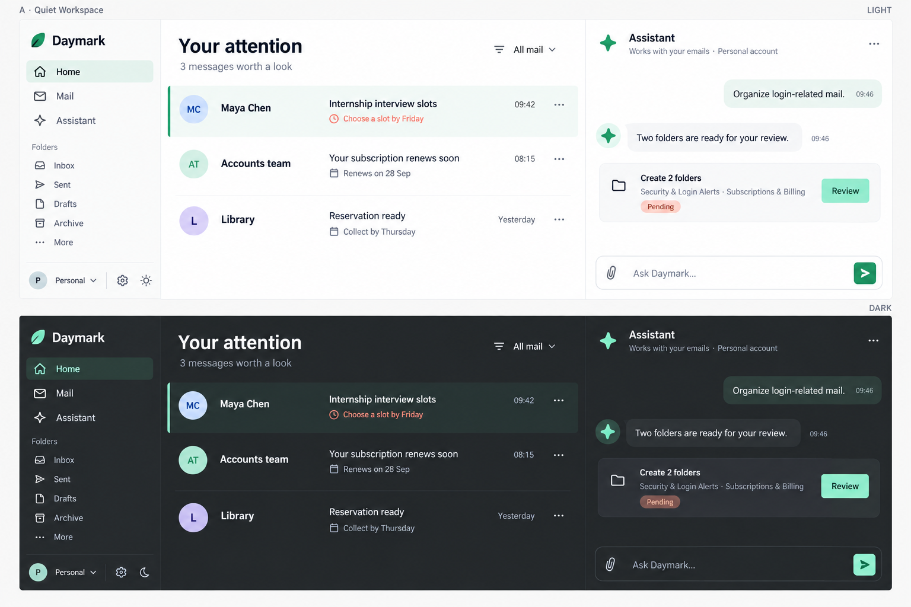

Independent personal software project
Daymark
A place to keep up with your mail, remember what matters, and decide what happens next.
Daymark brings connected email into a private workspace. Optional AI assistance can help find information, surface dates and obligations, and prepare actions for review.
Private deployment. No public sign-up.
The project
Built around personal attention
Daymark began with an ordinary problem: important things get lost in an inbox. The aim is a useful personal workspace, with the original messages close at hand and decisions still belonging to you.
The application supports Gmail and Outlook mail, search, attachments, drafts, contacts and calendars. Its optional AI features include account-specific summaries, extracted dates, semantic search and draft assistance. Availability depends on the connected account, configuration and permissions.
The current personal deployment is focused on reading and keeping mail up to date. This website is an information page, not a login portal or a public mailbox service.
Your choices
Mail access and AI access are different
Connect ordinary mail
Google or Microsoft authorization lets Daymark use the account features you grant. Provider passwords are entered with the provider, not into Daymark.
Choose agent access separately
Gmail AI workflows use a separate Google authorization. Declining it leaves ordinary mail available.
Decide whether data goes to a model
Model processing requires a further in-app consent step showing the configured destination and data mode. Authorizing Google access does not enable AI processing.
Read the privacy notice for the data involved, retention and disconnection controls.
An early interface study
Illustrative content only
About & contact
A personal project, openly described
Daymark is maintained by THeORange-ui. It is not an official service of Google, Microsoft or any university.
The Google consent screen may still show the project's earlier name, Slackssistant. Daymark is the current product name. This page does not imply Google verification or endorsement.
For authorization or private-data questions, use the support email shown on the Google consent screen or the private contact channel supplied with your deployment. Do not post messages, attachments, credentials or other private information in public GitHub discussions.